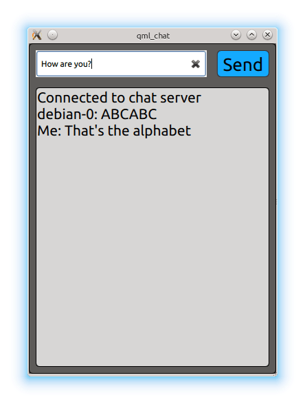

Bluetooth QML Chat Example
An example demonstrating communication through Bluetooth QML API.
Bluetooth QML Chat example shows how to use the Qt Bluetooth QML API to communicate with another application on a remote device using Bluetooth.

The Bluetooth QML Chat example implements a simple chat program between two parties. The application acts as client and attempts to connect to a Bluetooth socket server. It uses the BluetoothDiscoveryModel type to find the server and BluetoothSocket type to facilitate the data exchange.
Running the Example
To run the example from Qt Creator, open the Welcome mode and select the example from Examples. For more information, visit Building and Running an Example.
The example only works in connection with the Bluetooth Chat Example. The Bluetooth Chat example launches the chat service and advertises it via the Bluetooth SDP protocol. It is important that the device running the Bluetooth Chat example actively advertises its SDP services. This can be checked using the QBluetoothLocalDevice::hostMode property.
Interacting with the Server
The example application immediately starts the service discovery using the BluetoothDiscoveryModel type:
BluetoothDiscoveryModel { id: btModel running: true discoveryMode: BluetoothDiscoveryModel.FullServiceDiscovery uuidFilter: targetUuid //e8e10f95-1a70-4b27-9ccf-02010264e9c8 }
The uuidFilter property is used to only search for the chat server UUID and the running property activates the search. Once a service with a matching UUID is found the model emits the serviceDiscovered(BluetoothService) signal.
onServiceDiscovered: {
if (serviceFound)
return
serviceFound = true
console.log("Found new service " + service.deviceAddress + " " + service.deviceName + " " + service.serviceName);
searchBox.appendText("\nConnecting to server...")
remoteDeviceName = service.deviceName
socket.setService(service)
}
The BluetoothService type encapsulates the details of the found chat server, such as the name and description of the service, as well as the name and address of the Bluetooth device offering the chat server. It is passed to the BluetoothSocket to establish the connection.
Once the connection is established the socket's state is managed as follows:
BluetoothSocket { id: socket connected: true onSocketStateChanged: { switch (socketState) { case BluetoothSocket.Unconnected: case BluetoothSocket.NoServiceSet: searchBox.animationRunning = false; searchBox.setText("\nNo connection. \n\nPlease restart app."); top.state = "begin"; break; case BluetoothSocket.Connected: console.log("Connected to server "); top.state = "chatActive"; // move to chat UI break; case BluetoothSocket.Connecting: case BluetoothSocket.ServiceLookup: case BluetoothSocket.Closing: case BluetoothSocket.Listening: case BluetoothSocket.Bound: break; } } //... }
The payload is received via the stringData property:
onStringDataChanged: {
console.log("Received data: " )
var data = remoteDeviceName + ": " + socket.stringData;
data = data.substring(0, data.indexOf('\n'))
chatContent.append({content: data})
}
And sent by setting the same property:
socket.stringData = data